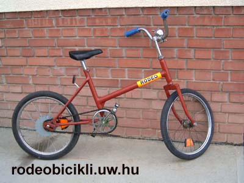
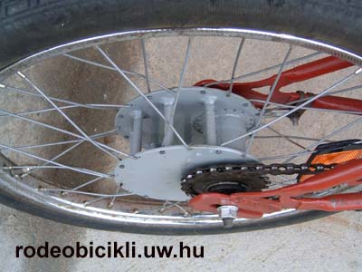
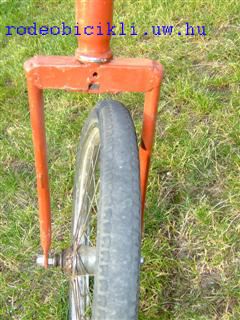

Riding the RODEO BIKE our feeling is like riding a wild horse, obviously this bike isn't so dangerous. The rear part moves up-down and the first one left-right.
The bike has a special, modified gear::

The axle of the rear wheel is not placed in the centre, but shifted any centimeters.
The axle is not abeam with the plain geometry of the first wheel.

Riding the "rodeobicikli" in a flat way we have the feeling like riding in a very undulating road. By a higher velocity the bike will shake off the rider.